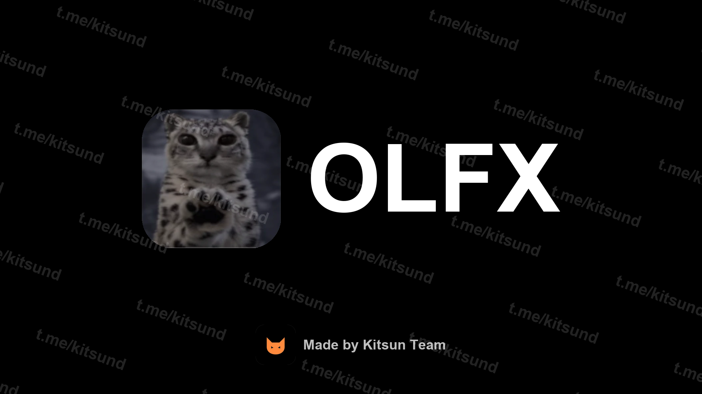

OLFX
Запускайте VR-игры на телефоне: OpenXR-рантайм, трекинг рук по камере и поддержка Joy-Con как Oculus Touch.
Скачать APK Скачать IPA Made by Kitsun Team
Запускайте VR-игры на телефоне: OpenXR-рантайм, трекинг рук по камере и поддержка Joy-Con как Oculus Touch.
Скачать APK Скачать IPA Made by Kitsun Team